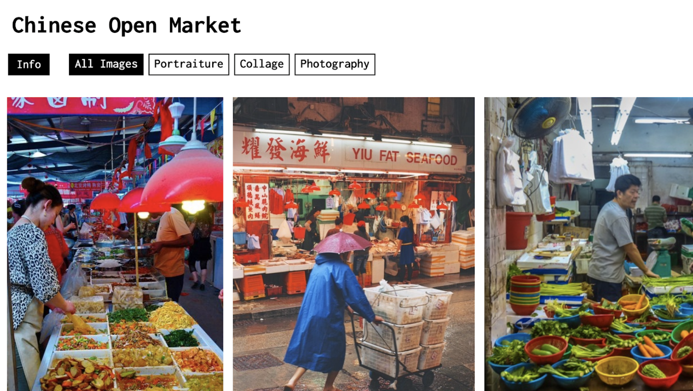
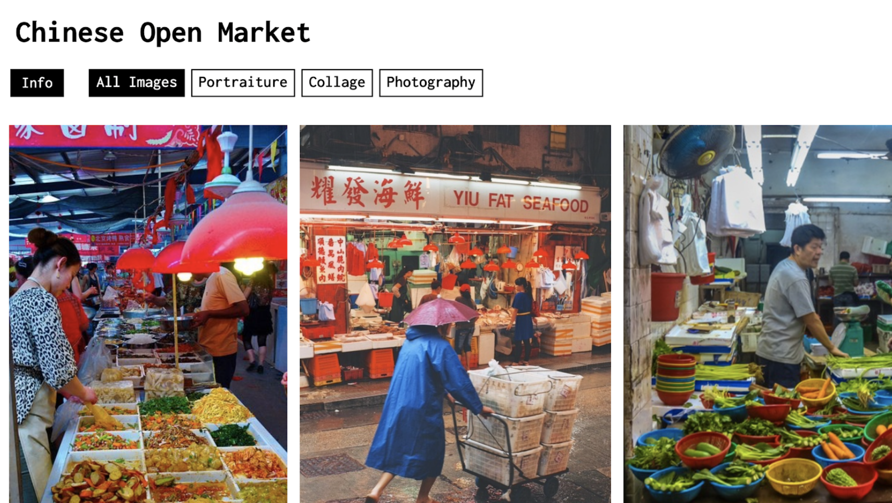
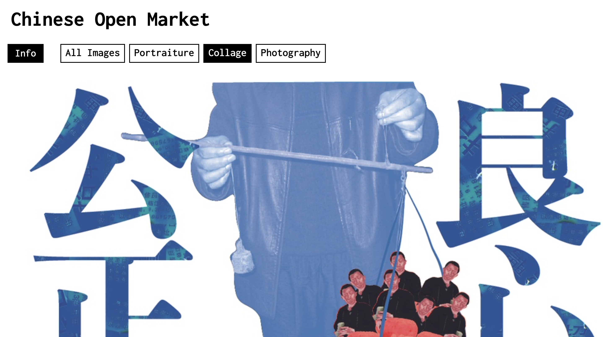
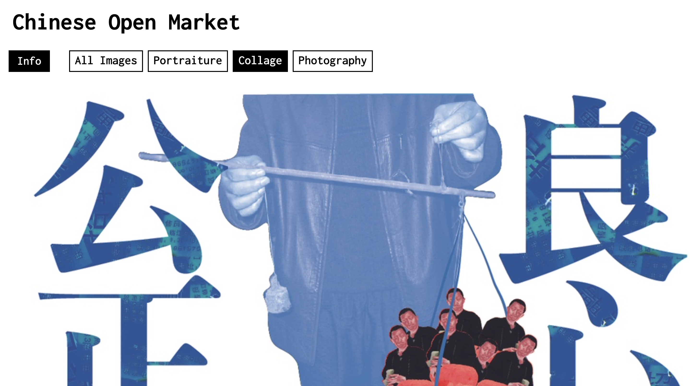

Documenting Project 3
A photography exhibition about online exhibitions, revolving around photography in the Chinese market.
Audience: People who love Chinese culture and want to know about the local market
This is an online photo exhibition about the Chinese market, and these photos are all enlarged and arranged on the page. Viewers can view the enlarged photo by scrolling around the page. This allows the browser to explore the page in this way. Web pages have categories, and browsers explore web pages in a second way through categories such as collage, photography, and portraits.
 


 


10 List Items
1. chaotic
2. crowded
3. noisy
5. wordy
6. omnivorous
7. messy
8. promotional
9. authentic
4. dark
10. native